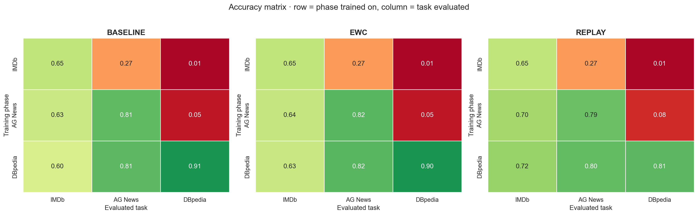
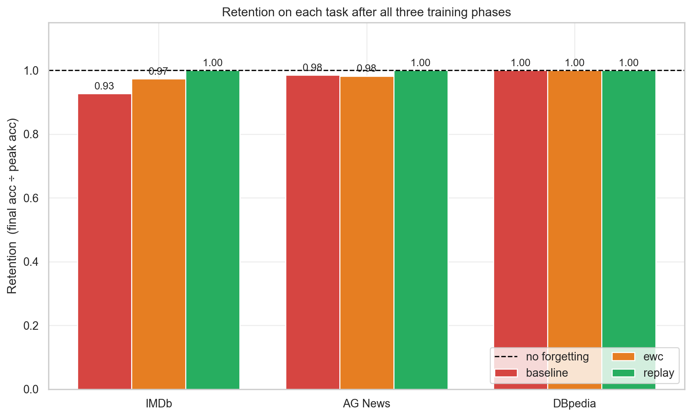
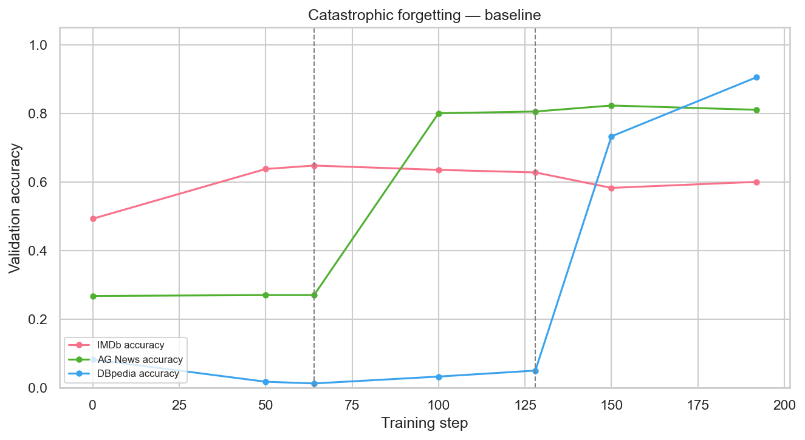
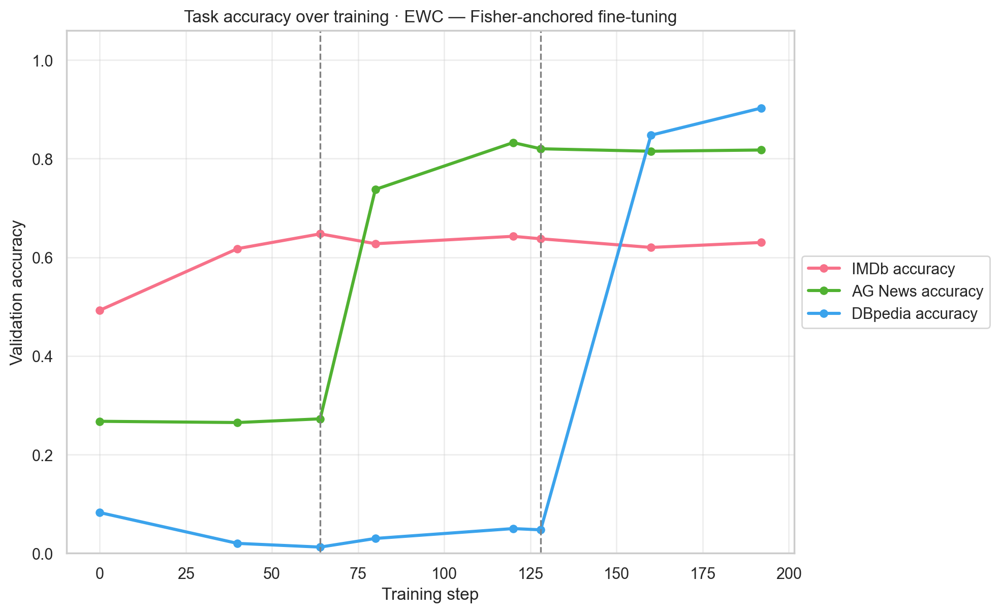
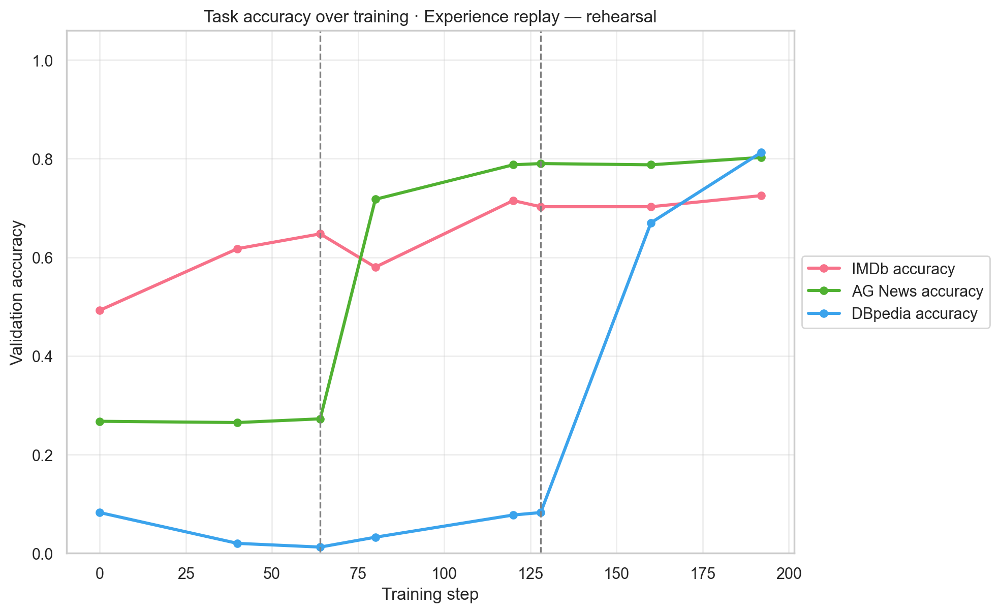
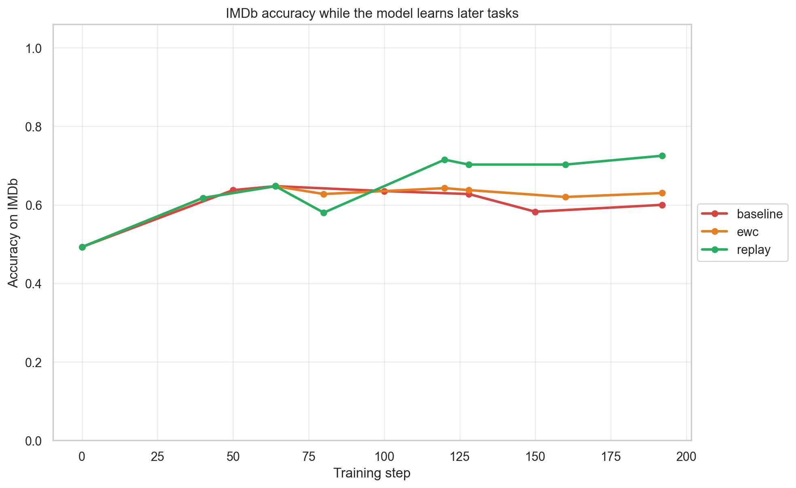

An end-to-end account of what we did, what the experiments showed, and what we learned — from raw curiosity about why LLMs forget, to a working, reproducible experiment platform with measurable results.
cf_lab/ package · Dashboard: app/dashboard.py · Results: experiments/*.jsonWe kept reading that large language models "forget" old knowledge after fine-tuning. Every explanation was abstract — curves in papers, claims without a demo. So we decided to build it from scratch to watch it happen, measure it, and test the standard defenses.
Fine-tune one transformer on Task A, then Task B, then Task C — how much of Task A's accuracy is destroyed? And can EWC or Experience Replay prevent it?
Task-incremental continual learning with a shared encoder + one head per task:
| Phase | Task | Dataset | Classes | Skill |
|---|---|---|---|---|
| 1 | IMDb | stanfordnlp/imdb |
2 | Sentiment analysis |
| 2 | AG News | fancyzhx/ag_news |
4 | News topic classification |
| 3 | DBpedia | fancyzhx/dbpedia_14 |
14 | Entity ontology typing |
google/bert_uncased_L-4_H-256_A-4 (~11M params — chosen so a full
run finishes in ~11–13 min on CPU).½·λ·Σᵢ Fᵢ·(θᵢ−θ_Aᵢ)² during later training to anchor the important weights.
λ = 500.catastrophic-forgetting-lab/
├── cf_lab/ # core package
│ ├── config.py # tasks, hyperparameters, hardware detection
│ ├── data.py # load / shuffle / subsample / tokenize datasets
│ ├── model.py # ContinualClassifier (shared encoder + per-task heads), compute_fisher
│ ├── training.py # fine_tune_phase, EWC penalty, ReplayBuffer, _mix_replay
│ ├── experiment.py # phase orchestration + step logging
│ ├── metrics.py # retention, forgetting, confusion matrices
│ ├── plotting.py # learning-curve & heatmap plots
│ ├── results.py # JSON persistence + reloading
│ └── run.py # CLI entry point
├── app/dashboard.py # Streamlit dashboard (run / compare / theory / saved results)
├── experiments/ # 3 saved JSON results
├── docs/images/ # report figures
├── generate_images.py # regenerate figures from results
└── run_dashboard.bat # one-click launcher (venv-safe)
We deliberately wrote the training loop ourselves (no continual-learning framework) so every moving part — Fisher estimation, replay mixing, multi-head routing — is visible and debuggable.
All runs used identical settings (see §1). Accuracy on each task is measured after every training phase.
Baseline — the older the task, the more it decays:
| Trained on \ Evaluated | IMDb | AG News | DBpedia |
|---|---|---|---|
| IMDb | 0.647 | 0.270 | 0.013 |
| AG News | 0.627 | 0.805 | 0.050 |
| DBpedia | 0.600 | 0.810 | 0.905 |
EWC — the decay is largely suppressed:
| Trained on \ Evaluated | IMDb | AG News | DBpedia |
|---|---|---|---|
| IMDb | 0.647 | 0.273 | 0.013 |
| AG News | 0.637 | 0.820 | 0.048 |
| DBpedia | 0.630 | 0.818 | 0.902 |
Replay — nothing is lost, and task 1 even improves:
| Trained on \ Evaluated | IMDb | AG News | DBpedia |
|---|---|---|---|
| IMDb | 0.647 | 0.273 | 0.013 |
| AG News | 0.703 | 0.790 | 0.083 |
| DBpedia | 0.725 | 0.802 | 0.812 |

| Strategy | IMDb | AG News | DBpedia | Runtime |
|---|---|---|---|---|
| Baseline | 0.93 | 0.98 | 1.00 | 678 s |
| EWC | 0.97 | 0.98 | 1.00 | 802 s |
| Replay | 1.00 | 1.00 | 1.00 | 790 s |




Watch the older-task lines slope downward in the baseline; EWC holds them flatter; replay holds them essentially flat.

MEDIUM.md) with reproducible results.imdb is sorted by label. Taking the first N examples gives a
degenerate single-class subset — our first "model" learned to always predict 0.
Fix: shuffle before subsampling (now in data.py).torch.no_grad() — the square of a sum is not the sum of squares. Doing it
inside no_grad silently produces a wrong (near-zero) penalty.datasets v5 changed its API. IDs are namespaced (fancyzhx/dbpedia_14,
not dbpedia_14), trust_remote_code no longer exists, and Amazon/DBpedia use a
content column, not text. Old tutorials quietly break.head_index, and other
tasks' logit columns must be padded with -inf so the loss ignores them.distilbert-base-uncased is ~5 s/step on
CPU; the L-4 H-256 BERT is ~0.85 s/step — a 6× difference that decides whether
you can iterate at all. Right-sizing the model is an experiment design choice.run_dashboard.bat) and a friendly preflight check
in the app.git clone https://github.com/Pratyush-Mohanty/catastrophic-forgetting-lab.git
cd catastrophic-forgetting-lab
py -3.10 -m venv .venv
.venv\Scripts\python -m pip install -r requirements.txt
# interactive dashboard (pre-loaded results)
run_dashboard.bat # or: .venv\Scripts\python -m streamlit run app/dashboard.py
# CLI
.venv\Scripts\python -m cf_lab.run --mitigation baseline --plot
.venv\Scripts\python -m cf_lab.run --mitigation ewc --samples 1000 --epochs 2
.venv\Scripts\python -m cf_lab.run --mitigation replay --samples 1000 --epochs 2
Saved results live in experiments/ and the dashboard's Compare strategies tab
loads them automatically.
distilbert, bert-base).